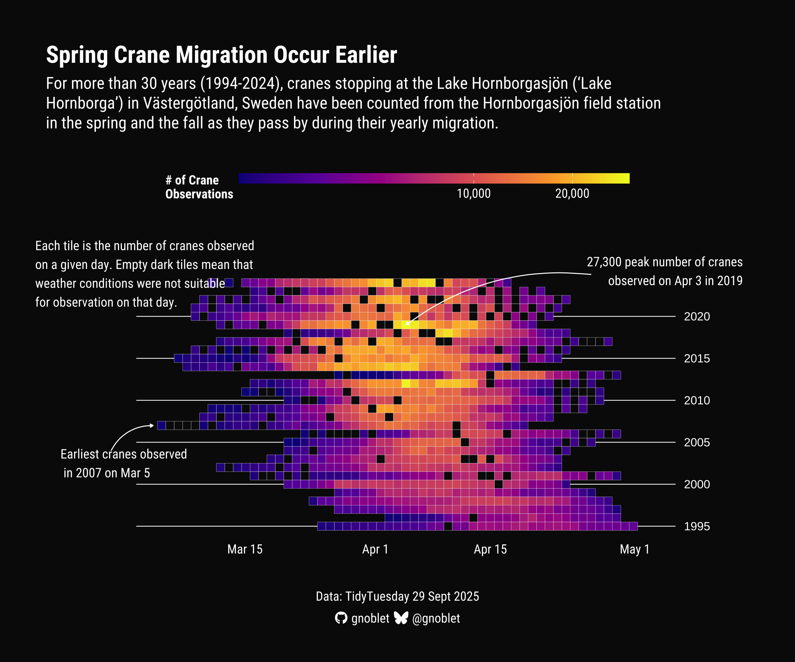

# Load required libraries
library(ggplot2)
library(ggbranding) # to add personal branding to plots
library(dplyr) # for data manipulation
library(showtext) # for custom fonts
library(sysfonts) # for custom fonts
library(ggtext) # for rich text annotations
library(lubridate) # for date manipulation
library(viridis) # for color scalesAbout
This visualization is a submission for TidyTuesday, a weekly social data project organized by the Data Science Learning Community. The data comes from Week 39 of 2025, which explores crane observations at Lake Hornborgasjön, Sweden (1994–2024).
The heatmap is the work of Guillaume Noblet. You can find the original code in Github here.
Huge thanks to him for sharing his work! Thanks also to Soeun Kim for writing down the blogpost!
As a teaser, here is the chart we will create:

Load packages
Let’s first start by loading some packages.
As usual, we load ggplot2 for visualizing data. We will also use showtext to load custom fonts, ggtext for rich text formatting, and viridis for color scales. For data manipulation, we load lubricate and dplyr.
This plot will also use ggbranding for personal branding. Since it is not on CRAN yet, you can install the development version directly from Github using the code below. (You can install pak library by install.packages("pak")) For more information, check out Guillaume’s github here.
# for loading ggbranding
library(pak)
pak::pak("gnoblet/ggbranding")Load and prepare the dataset
Today’s data comes straight from TidyTuesday initiative by loading tidytuesdayR.
Note: If you are new to TidyTuesday, make sure to install the separate package by install.packages("tidytuesdayR"). You can find the original announcement and more information about the data here
# Get data
library(tidytuesdayR)
dat <- tt_load("2025-09-30")
dat <- dat$cranesAnalyze data
From the data source in github, we know that cranes are observed by the Hornborgasjön field station during spring season.
Through heatmap, we will be answering the following questions:
- When was the earliest observation date of the crane population?
- When is the peak period for crane observation?
In order to answer these questions, we need to add month and year columns, create dat_spring to keep only spring months.
# add a month and year column using lubridate
dat <- dat |>
mutate(
month = month(date),
year = year(date),
day = day(date),
day_of_year = yday(date),
day_month = paste0(sprintf("%02d", month), "-", sprintf("%02d", day)),
day_month_label = paste0(month.abb[month], " ", day)
)
# keep only spring months (Feb to May)
dat_spring <- dat |>
filter(month %in% 2:5) |>
mutate(
# Create a sequential day within spring season for better x-axis
spring_day = case_when(
month == 2 ~ day,
month == 3 ~ day + 29,
month == 4 ~ day + 60,
month == 5 ~ day + 90
)
)
head(dat_spring)# A tibble: 6 × 11
date observations comment weather_disruption month year day
<date> <dbl> <chr> <lgl> <dbl> <dbl> <int>
1 2024-04-15 630 Last count of se… FALSE 4 2024 15
2 2024-04-14 3220 <NA> FALSE 4 2024 14
3 2024-04-13 NA Canceled/No count FALSE 4 2024 13
4 2024-04-12 5780 <NA> FALSE 4 2024 12
5 2024-04-11 10150 <NA> FALSE 4 2024 11
6 2024-04-10 10050 <NA> FALSE 4 2024 10
# ℹ 4 more variables: day_of_year <dbl>, day_month <chr>,
# day_month_label <chr>, spring_day <dbl>More into data analysis. Let’s answer the questions and store the results in earliest_obs_text (earliest observation of crane population) and max_obs_text (day with highest number of cranes observed) into text.
# Earliest day of year for spring migration
# when did the earliest observation occur?
earliest_obs <- dat_spring |>
arrange(spring_day) %>%
slice(1)
# Prepare annotation text
earliest_obs_text <- paste0(
"Earliest cranes observed\n in ",
earliest_obs$year,
" on ",
earliest_obs$day_month_label
)
head(earliest_obs_text)[1] "Earliest cranes observed\n in 2007 on Mar 5"# Day with the highest number of cranes
max_obs <- dat_spring |>
arrange(desc(observations)) |>
slice(1)
max_obs_text <- paste0(
scales::comma(max_obs$observations),
" peak number of cranes\n",
" observed on ",
max_obs$day_month_label,
" in ",
max_obs$year
)
max_obs_day <- max_obs$spring_day
head(max_obs_text)[1] "27,300 peak number of cranes\n observed on Apr 3 in 2019"The resulted code will be used as an annotation for our chart. We also prepare for annotations of the dark tiles in exp_obs_text. Now for titles and subtitles, title_text and subtitle_text are for titles and subtitles, which we will add during plotting using ggtext.
# Text for explaining what each tile is
# appear at the top left of the plot so min of year 2024
exp_obs <- dat_spring |>
filter(year == 2024) |>
arrange(spring_day) |>
slice(1)
exp_obs_text <- "Each tile is the number of cranes observed\non a given day. Empty dark tiles mean that\nweather conditions were not suitable\nfor observation on that day."
# Subtitle text to pass to ggtext
title_text <- "Spring Crane Migration Occur Earlier"
subtitle_text <- "For more than 30 years (1994-2024), cranes stopping at the Lake Hornborgasjön ('Lake Hornborga') in Västergötland, Sweden have been counted from the Hornborgasjön field station in the spring and the fall as they pass by during their yearly migration."And we’re ready to plot!
Basic Tile Heat Map
We first create basic tiled heatmap using geom_tile.
Since the chart will show daily counts of crane observation over the past 30 years, we create breaks for x-axis for every two weeks and label some specific dates.
We also want horizontal label for every 5 years. (Since our plot will be dark themed, the labels will be in white). For color of tiles that represent crane observations, we use viridis package. Dark tiles are missing values within spring season.
# Create breaks for x-axis (every two weeks approximately)
spring_breaks <- c(46, 61, 75, 92)
spring_labels <- c(
"Mar 15",
"Apr 1",
"Apr 15",
"May 1"
)
# Spring migration tile plot with dark theme and ggplot2 4.0 features
p_spring <- ggplot() +
# horizontal line every 5 years
geom_segment(
data = data.frame(
y = seq(1995, 2024, by = 5),
xmin = 31,
xmax = 95
),
aes(x = xmin, xend = xmax, y = y),
color = "white",
linewidth = 0.4
) +
geom_text(
data = data.frame(
y = seq(1995, 2024, by = 5),
x = 96,
label = seq(1995, 2024, by = 5)
),
aes(x = x, y = y, label = label),
color = "white",
size = 4.5,
hjust = 0
) +
geom_tile(
data = dat_spring,
aes(x = spring_day, y = year, fill = observations),
linewidth = 0.1,
colour = "white",
) +
scale_fill_viridis_c(
name = "# of Crane\nObservations",
trans = "sqrt",
labels = scales::comma_format(),
option = "plasma",
na.value = "#0a0a0aff"
) +
scale_x_continuous(
limits = c(19, 105),
breaks = spring_breaks,
labels = spring_labels,
expand = c(0, 2)
) +
scale_y_continuous(
limits = c(1994, 2030),
breaks = c(1994, 2024),
expand = c(0, 1)
) +
labs(
title = title_text,
subtitle = subtitle_text,
x = NULL,
y = NULL
)
p_spring
We now have a basic heat map with each tile representing the number of crane observations. Now, how can we better style it?
Add annotations
We could use some annotations for our chart! We already know the earliest observation and the max observation of cranes so we add them as well as explanation of each tile. (Again, the annotations are white since the plot will be dark themed.)
# Fonts
font_add_google("Roboto Condensed", "Roboto Condensed")
showtext_auto()
showtext_opts(dpi = 300)
p_spring <- p_spring +
# Add annotation for earliest 2007 data point
annotate(
"curve",
x = 28,
y = 2004,
xend = 33,
yend = 2007,
curvature = -0.3,
arrow = arrow(length = unit(0.01, "npc"), type = "closed"),
color = "white",
size = 0.5
) +
annotate(
"text",
x = 22,
y = 2002.5,
label = earliest_obs_text,
hjust = 0,
vjust = 0.5,
color = "white",
size = 5,
family = "Roboto Condensed"
) +
# Add annotation for max observation
annotate(
"curve",
x = 85,
y = 2025,
xend = max_obs_day,
yend = max_obs$year,
curvature = 0.2,
arrow = arrow(length = unit(0.01, "npc"), type = "closed"),
color = "white",
size = 0.5
) +
annotate(
"text",
x = 103,
y = 2025.4,
label = max_obs_text,
hjust = 1,
vjust = 0.5,
color = "white",
size = 5,
family = "Roboto Condensed"
) +
# Add annotation for explanation of tiles
annotate(
"text",
x = 19,
y = 2029,
label = exp_obs_text,
hjust = 0,
vjust = 1,
color = "white",
size = 5,
family = "Roboto Condensed"
)
p_spring
Some progress. Let’s finalize our chart!
Final Chart
We now can customize general theme including dark backgrounds, change of title styling as well as legend styling. Then final touch by adding personal branding with ggbranding.
p_spring <- p_spring +
# Using ggplot2 4.0 theme features
theme_void(base_family = "Roboto Condensed") +
theme(
# Dark background theme using new ggplot2 4.0 approach
plot.background = element_rect(fill = "#0a0a0a", colour = NA),
panel.background = element_rect(fill = "#0a0a0a", colour = NA),
# Title styling with white text
plot.title = element_textbox_simple(
size = 26,
face = "bold",
colour = "white",
hjust = 0,
margin = margin(t = 20, b = 10, l = 30, r = 30)
),
plot.subtitle = element_textbox_simple(
size = 18,
colour = "white",
hjust = 0,
margin = margin(b = 30, l = 30, r = 30),
width = unit(0.9, "npc")
),
axis.text.x = element_text(
colour = "white",
size = 14,
hjust = 1
),
# Legend styling
legend.text = element_text(colour = "white", size = 14),
legend.title = element_text(colour = "white", size = 14, face = "bold", ),
legend.position = "top",
legend.key.height = unit(0.4, "cm"),
legend.key.width = unit(3, "cm"),
legend.margin = margin(t = 15, b = 20),
# Using new margin system from ggplot2 4.0
plot.margin = margin(30, 20, 30, 20)
) +
# Add branded footer using ggbranding
add_branding(
github = "gnoblet",
bluesky = "@gnoblet",
icon_color = "white",
text_color = "white",
additional_text = "Data: TidyTuesday 29 Sept 2025",
additional_text_color = "white",
caption_margin = margin(t = 40, b = 10),
line_spacing = 2L,
icon_size = "14pt",
text_size = "14pt",
caption_halign = 0.5
)
p_spring
Awesome chart with nice, explicit annotations!
Now, last final step would be to save the plot.
Save the plot
# Display and save the plot
ggsave(
"week_39.png",
p_spring,
width = 11,
height = 13,
dpi = 300
)Going further
This post explains how to create a heatmap with crane observation counts represented in colors.
For more about heatmap, make sure to check out vaccination impact heatmp of the gallery and the hourly heatmap.